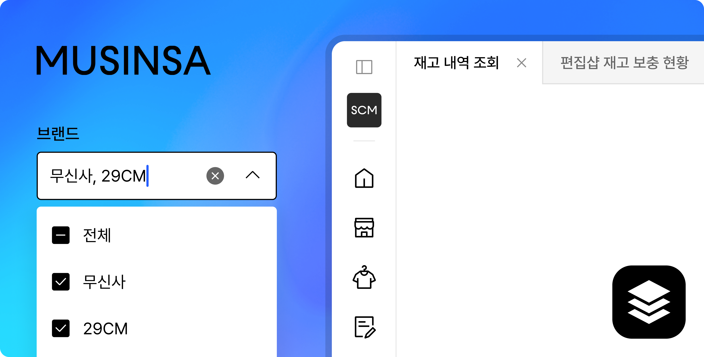
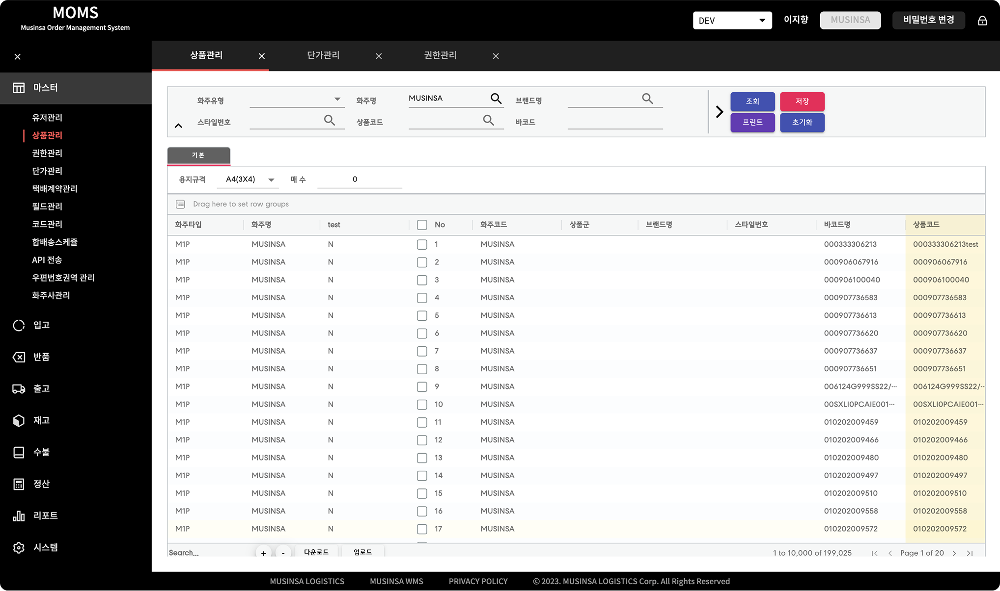
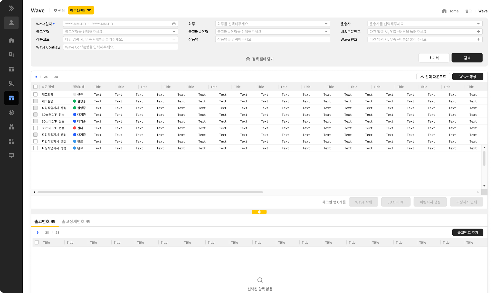
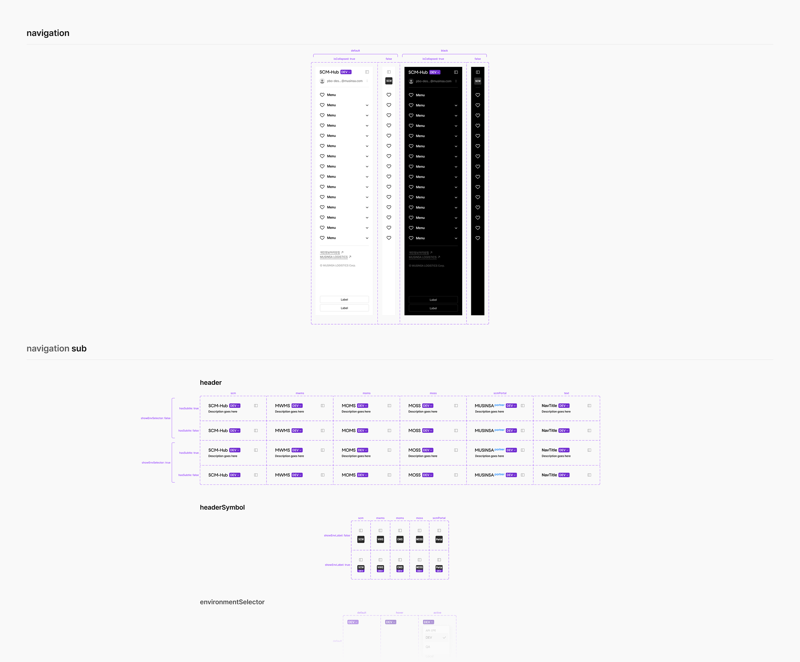
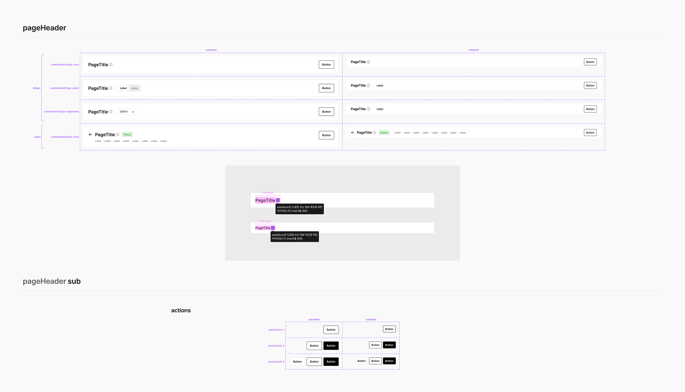
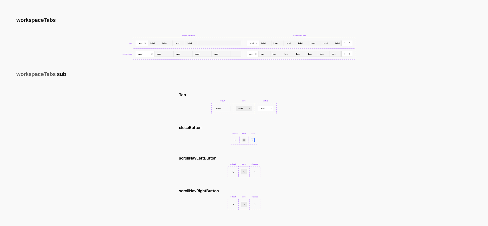
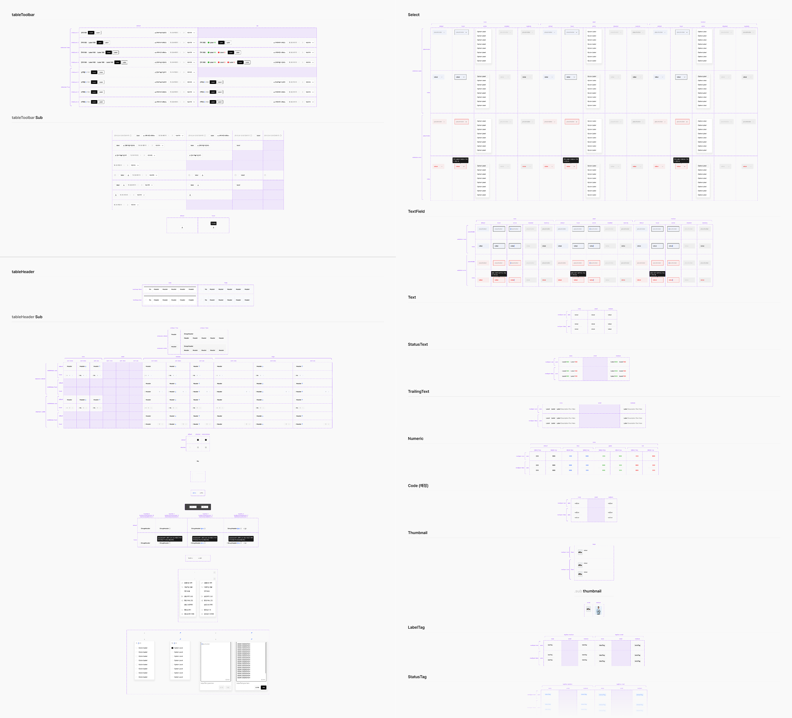
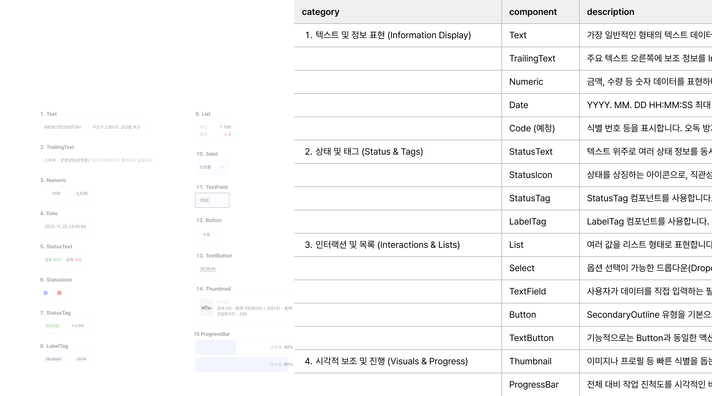
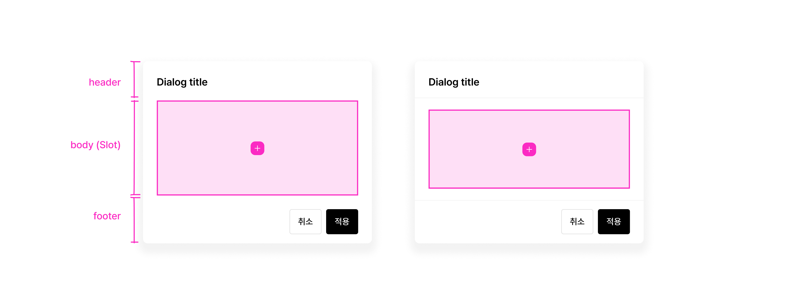
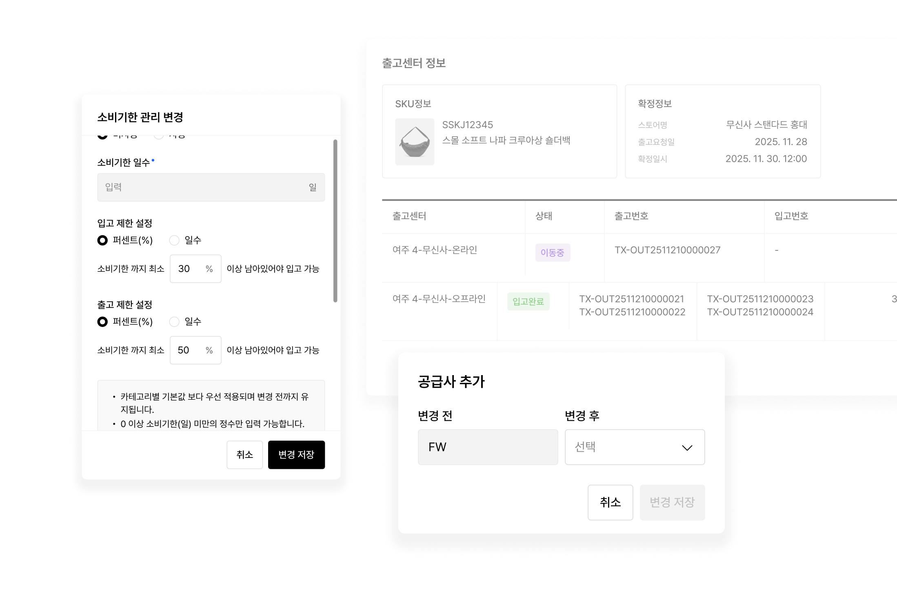

Overview 개요
LayerDesktop은 MUSINSA PBO 환경에서 운영되는 SCM, OMS, WMS 등 데이터 중심의 Desktop 제품을 위한 디자인 시스템입니다.
이 프로젝트는 토큰이나 아키텍처 설계가 아닌, 실제 제품에서 사용되는 컴포넌트와 UI 패턴을 설계하고 검증합니다.
특히, 정보 밀도가 높은 B2B 환경에서 발생하는 UI 복잡도를 해결하기 위해 컴포넌트 구조와 패턴을 설계하고, 이를 실제 제품에 적용하며 개선했습니다.
Collaborators 협업
Platform designer(1), Product designer(2.5), Front-end engineer(1)
Goals 목표
Design Process 디자인 프로세스
분석 및 리서치
설계 원칙 정의
핵심 컴포넌트 및
패턴 도출
컴포넌트 설계
라이브러리
배포
제품 적용 및 검증
Testing and iteration
Research 연구
SCM은 기존 ERP(SAP) 제품에서 사용되던 기능을 내부 제품으로 전환하는 신규 프로덕트로, 초기부터 디자인 시스템이 함께 구축되어야 했습니다.
반면, OMS와 WMS는 이미 운영 중인 제품으로 디자인 시스템 없이 각각 다른 UI 구조를 가지고 있었습니다. 이로 인해 Desktop 환경 전반에서 다음과 같은 문제가 발생했습니다.


이에 따라 Desktop 환경 전체를 통합할 수 있는 공통 디자인 시스템 LayerDesktop을 구축하기로 결정했습니다.
설계 기준은 가장 복잡하고 다양한 케이스를 포함하는 SCM 제품으로 설정하고, 이를 기준으로 다른 제품(OMS, WMS)에도 확장 가능한 구조를 만들 수 있다고 판단했습니다.
Design Results
Navigation, PageHeader, WorkspaceTabs, Table 등 Desktop 제품의 핵심 영역을 구조 단위로 정의했습니다.




Design Results
데이터 밀도가 높은 환경에서 발생하는 UI 문제를 패턴 중심으로 재정의 하고, 일관된 방식으로 설계할 수 있는 기준을 확보 했습니다.

🎨 minWidth: 88px → 모든 셀에 적용되는 최소 규격으로, 극단적인 반응형 상황에서도 데이터가 완전히 숨겨지지 않도록 보호합니다.
Design Results
Slot 기반 구조 설계로 다양한 제품 요구를 수용하면서도 일관성을 유지할 수 있는 구조적 조합 단위로 컴포넌트를 설계했습니다.
이 구조는 다양한 데이터 케이스와 화면 구성에서 일관된 방식으로 재사용이 가능함을 확인했습니다.


Testing and Integration
into Product 테스트와 제품 통합
SKU 관리 화면을 중심으로 Table 구조를 적용하고, 필터·헤더·네비게이션 패턴을 실제 사용자 흐름에 맞게 테스트했습니다.
이 과정에서 컴포넌트 구조가 다양한 데이터 케이스를 안정적으로 수용할 수 있는지, 화면 단위가 아닌 구조 단위로 재사용이 가능한지, 그리고 실제 구현 가능한 수준의 설계인지 검증했습니다.
또한 Product Designer와의 반복적인 개선 사이클과 Front-End Engineer와의 협업을 통해 컴포넌트 구조와 인터랙션을 지속적으로 보완했습니다.
Results and
Achievements 결과 및 성과
LayerDesktop 구축 프로젝트는 MUSINSA PBO Desktop 제품 전반의 UI 구조를 표준화 하고, Navigation, Table, Header 등 핵심 영역에서 일관된 설계 기준을 적용할 수 있게 되었습니다.
화면 단위로 반복되던 UI 설계가 컴포넌트 기반으로 전환되면서 디자인과 개발 모두에서 불필요한 반복 작업이 줄어들었고, 제품 간 UI 일관성 또한 자연스럽게 확보되었습니다.
또한 데이터 중심 화면에서 정보 구조와 표현 방식이 명확해지면서 가독성과 사용성이 개선되었고, 실제 제품에서 지속적으로 활용되는 디자인 시스템으로 자리잡게 되었습니다.